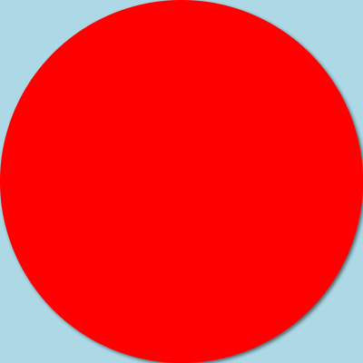

圆 circle¶
创建一个新的项目
在上一章中我们创建了一个小游戏，为了不覆盖这个项目，我们需要创建一个项目，点击文件->新建即可创建一个新的项目。当你需要打开原始项目时，只要点击文件->打开就可以看到所有你创建的项目了。
绘制彩虹¶
在开始介绍圆之前，让我们来制作一个简单的彩虹图画。如果你成功的按下面的步骤一步步的完成，那么最终的效果图如下图所示，是不是特别像雨后彩虹呢？

第1步：画出天空¶
我们经常说天空是蓝色的，其实更为接近的颜色是淡蓝色，我们将画布调整为400 x 400大小，并将画布填满lightblue颜色
canvas.resize(400, 400);
rectangle(0, 0, 400, 400, "lightblue");
canvas.resize是用来调整画布的大小，第一个参数代表宽度，第二个参数代表高度。我们将在画布一章中详细介绍resize的用法。
rectangle用来绘制一个长方形，在本章第二节的内容中我们可以了解更多关于rectangle的知识。
字符串
在代码中，用双引号("")包围的内容称之为字符串，在这里，“lightblue”就是一个字符串，用于表示颜色。字符串最明显的特征就是，两边必须要用双引号("")包围起来。
第2步：画下第一个圆¶
彩虹是由于光线被天空中的小水滴散射而形成的，散射的方向是任意的，所以从任何一点看，都应该是一个圆形的环。但是，由于被地平线所阻挡，我们往往只能看到一半的圆，而称之为拱形。现在，就让我们来还原这一过程。
circle(200, 200, 200, "red");

这里，我们使用了circle函数，在circle函数中，一共有4个参数，3个数字200以及一个单词red。很容易我们可以联想到red正是指我们要绘制的圆的颜色，也就是红色。这3个数字又是什么含义呢？
- 第一个200，代表圆心的水平位置，数值越大，圆的水平位置越靠右。
- 第二个200，代表圆心的垂直位置，数值越大，圆的上下位置越靠下。
- 第三个200，代表圆的半径，圆的大小由圆的半径决定。
我们在上一个项目中，就已经知道，画布的坐标系，水平方向称之为x方向，垂直方向称之为y方向。同样的，圆心的位置也是由x、y坐标来共同决定的。
x坐标、y坐标
一般约定，优先表示x坐标，再表示y坐标，我们在后续的学习中，也将沿用这个规律。
第3步：补齐其他颜色的色环¶
我们知道，彩虹的颜色由外到内是红橙黄绿青蓝紫，由外到内，圆的大小逐渐减小。按照这个顺序，我们一步步的将其他圆补齐。
circle(200, 200, 190, "orange");
circle(200, 200, 180, "yellow");
circle(200, 200, 170, "green");
circle(200, 200, 160, "cyan");
circle(200, 200, 150, "blue");
circle(200, 200, 140, "purple");
可以看到，所有圆的位置都没有变化，而半径逐渐减小。通过前面的圆来挡住后面的圆，我们就只能看到最外面一点点的圆环，实现了彩虹一环环不同颜色的效果。
第4步: 镂空¶
在上一步中，我们已经将所有的彩虹7个颜色都用上了，但是存在一个问题，这个中心是紫色的图形并不像我们看到的彩虹。不过，正如我们用一个个的圆来做出圆环的效果，我们再用一个和天空颜色一样的圆将现在的圆填充上，就可以将最后这个紫色的圆变为透明的了。
circle(200, 200, 130, "lightblue");
最后一步：遮挡¶
最后一步，改变画布的高度，也就是调整第一行的代码，让我们只能看到彩虹的上半部分，完成我们的彩虹。
// line 1
canvas.resize(400, 200);
如果你没有画出最终的拱形彩虹，那么检查一下你的代码是否和最终代码一致。
canvas.resize(400, 400);
rectangle(0, 0, 400, 400, "lightblue");
circle(200, 200, 200, "red");
circle(200, 200, 190, "orange");
circle(200, 200, 180, "yellow");
circle(200, 200, 170, "green");
circle(200, 200, 160, "cyan");
circle(200, 200, 150, "blue");
circle(200, 200, 140, "purple");
circle(200, 200, 130, "lightblue");
代码顺序
代码自上到下运行，改变代码的运行顺序，所得到的结果将完全不一样！
绘制方法 circle¶
在绘制彩虹的时候，我们用了很多个circle函数，它是做什么的呢？想必你已经非常清楚，它可以在画布上画出一个圆来。不仅可以设定圆的位置、大小，还可以设定它的颜色。
circle(x, y, r, *color);
/**************************
x - x坐标
y - y坐标
r - 半径
color - 颜色，默认为orange
**************************/
下面是一些不同的圆图形，它们都是通过circle函数来绘制出来的。示例代码：
canvas.showAxis();
circle(100, 100, 30);
circle(200, 100, 40, 'green');
circle(300, 100, 50, 'red');
// 如果想要画圆框，在使用circle之前，使用fill方法
fill(false);
circle(100, 200, 50);
circle(200, 200, 40, 'green');
circle(300, 200, 30, 'red');
fill(false)用于设置绘制的模式，参数false代表仅绘制边框而不绘制内部，也就是说，它可以让circle的作用变为画了一个空心的圆。当我们需要绘制圆的内部时，再次使用fill(trure)就可以让图形填充了。

例子：绘制奥运五环
奥运五环代表五大洲，环环相扣。我们可以用circle来画出奥运五环。
fill(false);
ctx.lineWidth = 8;
circle(100, 100, 45, "blue");
circle(150, 150, 45, "yellow");
circle(200, 100, 45, "black");
circle(250, 150, 45, "green");
circle(300, 100, 45, "red");
- ctx.lineWidth = 8，设置默认的线条宽度，默认为1，画出来的线条占据一个像素。设置为8后，画出来的所有线条为8个像素宽度。
圆形对象 Circle¶
当我们后续需要对图形进行操作时，我们就需要创建一个图形对象。对圆来说，就是一个圆对象。圆对象的定义如下:
class Circle(x, y, radius, color)
/***************************************************************
x, y: 圆的圆心位置
radius: 圆的半径
color: 圆的颜色
***************************************************************/
创建方式
var c = new Circle(100, 100, 50, "red");
创建一个对象
使用关键字new，表示创建一个全新的对象。注意，这里的new不能省略哦！
创建了对象，只是代表我们在计算机中有了这么一个对象。如要要使用这个对象，我们知道对象的属性和方法。比如说，我们我们要将这个圆对象画在画布上，那么就要使用圆对象的draw方法。
c.draw();
使用draw方法后，图形就被绘制在屏幕上了，如果不使用draw方法，圆仅仅存在计算机中，而不是画布上。
为了说明圆的位置，我们把坐标显示出来，即在第一行添加了canvas.showAixs()代码，后续相似例子将不再提示。
属性值¶
使用圆对象，最大的好处在于创建后还可以对圆进行操作。如，我们要在画布右侧再画1个粉红色的圆，那么只要把圆往右移动，然后再使用draw方法，就可以了
c.x = 250;
c.color = "pink";
c.draw();
c.x = c.x + 100;这里将圆c的水平位置往右移动了100个单位c.color = "pink";将圆c的颜色修改成了粉红色
最后，再用draw方式，将圆绘制在画布上，就得到了下面的图案。
坐标值 x,y¶
在这里，x就是圆c的一个属性值，代表圆c的x坐标值。用点运算符来读取，表达式为c.x。要修改c.x的值，则需要使用赋值运算符=。同样，y是圆c的另外一个属性值，代表圆c的y坐标值，表达式为c.y。我们来分析下c.x和c.y的变化过程：
- 创建时，第一个参数即
x坐标值，也就是c.x的值为100，第二个参数是y坐标值，c.y的值为100 - 当我们执行
c.x = 250;时，就将c.x设置为250，那么此时c.x的值就变为250 - 从创建开始，
y坐标值就没有被改变，所以c.y的值一直是100
在程序运行过程中，我们需要明确每个属性值是如何变化的，才能更好的预测图像出现的位置。
半径 r / radius¶
半径是圆特有的属性，在圆的几何定义，圆是到平面上到圆心距离相等的点的集合，这个距离，就是半径。等价属性，可以任意使用其中一个
例子
canvas.showAxis();
var c = new Circle(100, 100, 50); // x, y, rX, rY
c.draw();
c.y += 100;
c.r = 30;
c.fill();
c.x += 100;
c.radius = 40; // both radius or r works
c.shadowColor = 'pink';
c.shadowBlur = 4;
c.shadowOffsetX = 5;
c.shadowOffsetY = 5;
c.fill();
运行效果